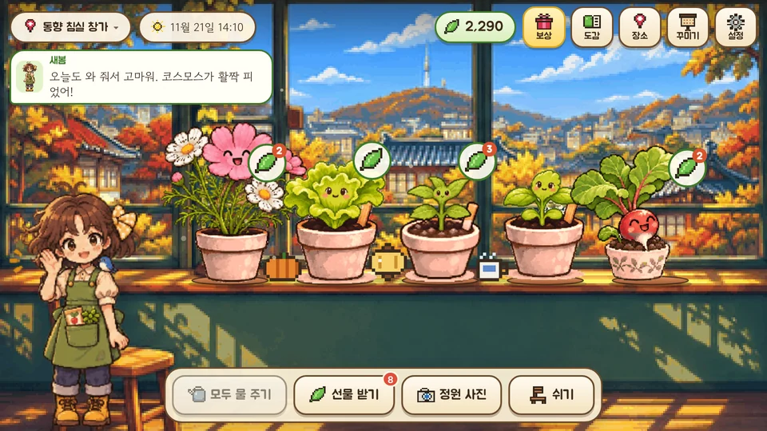
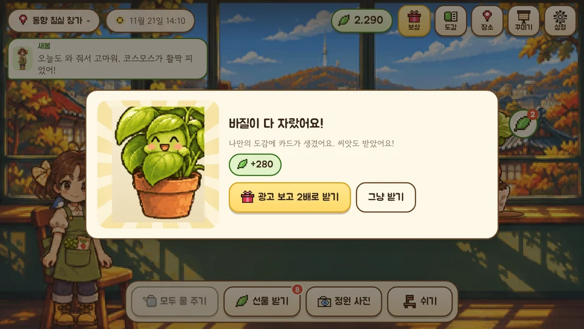
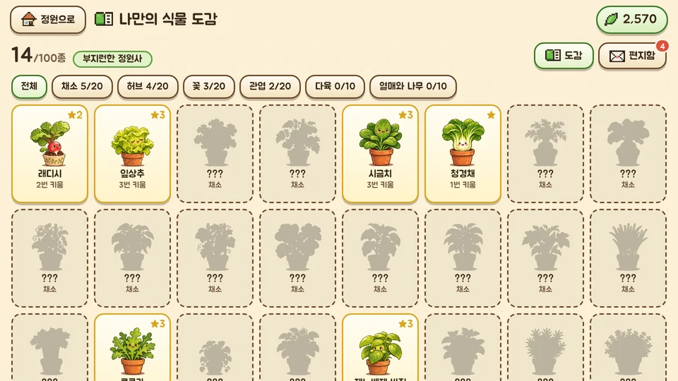
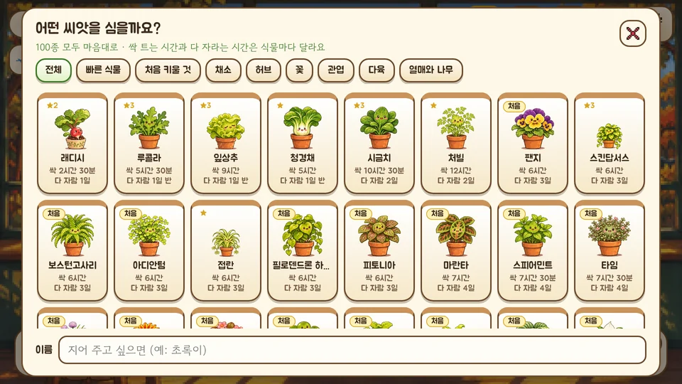
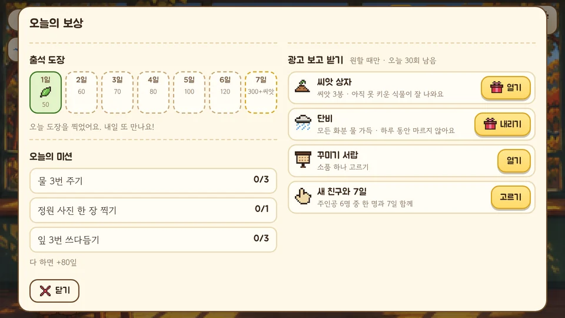
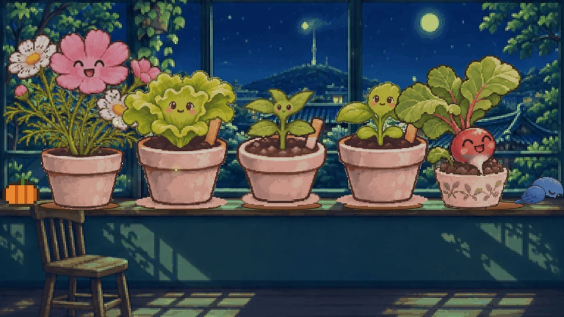

이런 게임이에요

심고, 물 주고, 쓰다듬고
빈 화분에 씨앗을 고르고 물만 주면 알아서 자라요. 첫 씨앗은 몇 분 만에! 식물이 죽는 일은 없어요.

다 자라면 축하해요
빠른 식물은 반나절, 꽃과 나무는 일주일쯤. 다 키우면 잎과 새 씨앗을 받아요.

나만의 식물 도감 100종
채소·허브·꽃·관엽·다육·열매와 나무. 그림자 카드를 하나씩 채워 가는 모으는 재미.

오늘은 뭘 심을까
식물 100종 모두 처음부터 마음대로 골라 심고, 이름도 지어 줘요.

매일 작은 즐거움
출석 도장, 오늘의 미션, 빵집 이웃의 편지, 명절 인사가 기다려요.

쉬어 가는 밤 정원
‘쉬기’를 누르면 정원만 가만히. 정원 사진과 움직이는 배경화면으로도 볼 수 있어요.
광고 안내
광고는 보고 싶을 때만 누르는 보상형 광고뿐이에요(보상 2배·행운 잎 주머니·단비·꾸미기 소품·새 친구 7일). 갑자기 뜨는 광고나 배너는 없고, 광고를 보지 않아도 심기·물 주기·도감 모으기·장소 열기를 모두 할 수 있어요.
만든 사람

푸렁이(대현)
기획 · 제작